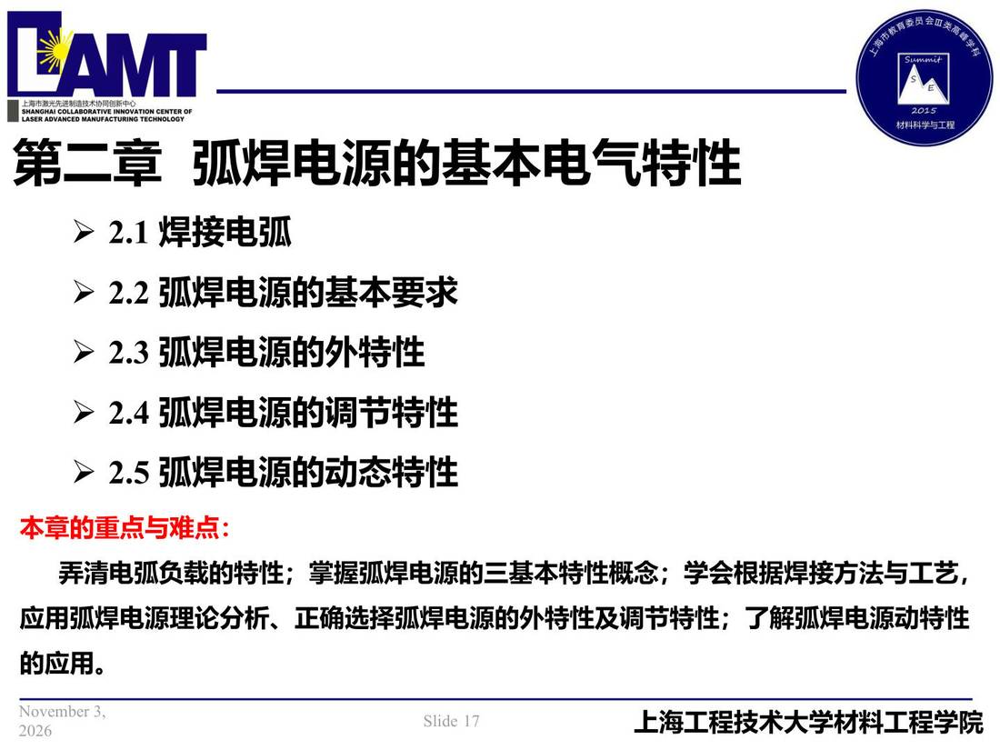

02 第2章 基本电气特性/p017 本章导览
p017 本章导览
📄 原文：📄 弧焊电源 课件（PDF 第 17 页）（幻灯片 17/273；PDF 第 17 页）
本章导览

讲义原文
第二章 弧焊电源的基本电气特性
- 2.1 焊接电弧
- 2.2 弧焊电源的基本要求
- 2.3 弧焊电源的外特性
- 2.4 弧焊电源的调节特性
- 2.5 弧焊电源的动态特性 本章的重点与难点：弄清电弧负载的特性；掌握弧焊电源的三基本特性概念；学会根据焊接方法与工艺，
应用弧焊电源理论分析、正确选择弧焊电源的外特性及调节特性；了解弧焊电源动特性的应用。
本页标红（老师强调）
- 本章的重点与难点：